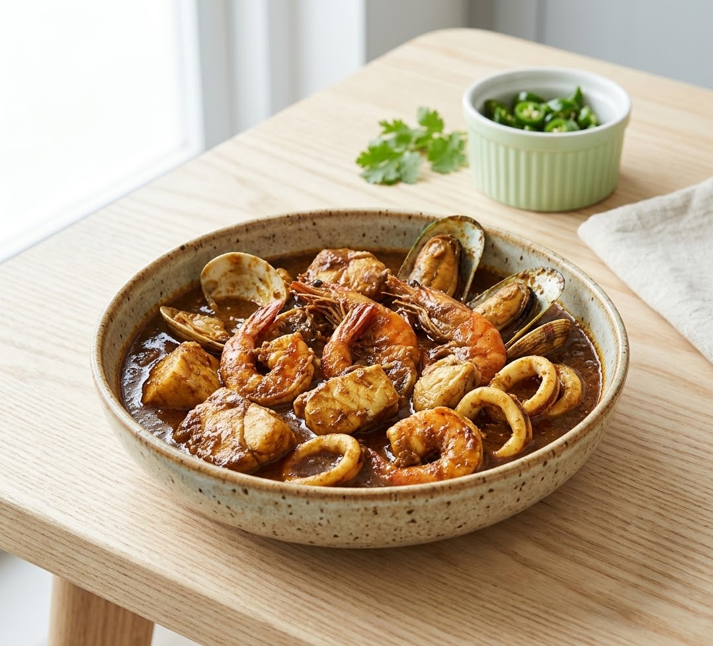

開店前、静寂の中に
漂い始めるスパイスの香。
地元一関の方はもちろん、仙台や福島からも、
その香りに誘われるように車が並びます。
私たちが守り続けてきたのは、
一口目で「ああ、これだ」と心ほどける、懐かしくも深い味わいです。

SONIA REINE
二十年、変わらぬ至福。
県外からもファンが訪れる伝説の味。
五感で味わう贅沢なひとときを、その一皿に。
地元一関の方はもちろん、仙台や福島からも、
その香りに誘われるように車が並びます。
私たちが守り続けてきたのは、
一口目で「ああ、これだ」と心ほどける、懐かしくも深い味わいです。
エビの香ばしさとホタテの甘み。真鯛や貝類から滲み出る濃厚な出汁。 それらが独自配合のスパイスと溶け合い、唯一無二の深いコクを生み出します。
20年以上、同じ情熱で作り続ける一皿。素材の味を邪魔せず、最大限に引き出す伝統の製法を守り抜いています。
エビ、ホタテ、真鯛。ケッパーをアクセントに、素材本来の旨味を倍増させるバランスは当店ならでは。
落ち着いた雰囲気の中、大切な人と素敵な時間を。小規模店だからこそ行き届く、丁寧なおもてなし。
より便利に、より身近に。ソニアレーヌが準備中の新しいサービス
日替わりメニュー＆仕込み状況をお知らせ
「今日の本日の魚料理は？」「本日の限定ランチは何？」といったお客様の声にお応えし、毎朝の新鮮な食材や『本日のランチ』情報を各種SNSでリアルタイム発信準備中。最新情報をどこからでも確認できるようになります。
キャッシュレスでスムーズなお会計
PayPayをはじめとする各種QR・コード決済や各種電子マネーの導入を計画中。お支払いがよりスムーズになり、お仕事合間のランチタイムや大切なご会食時も快適にお過ごしいただけます。
皆様に支えられて二十余年